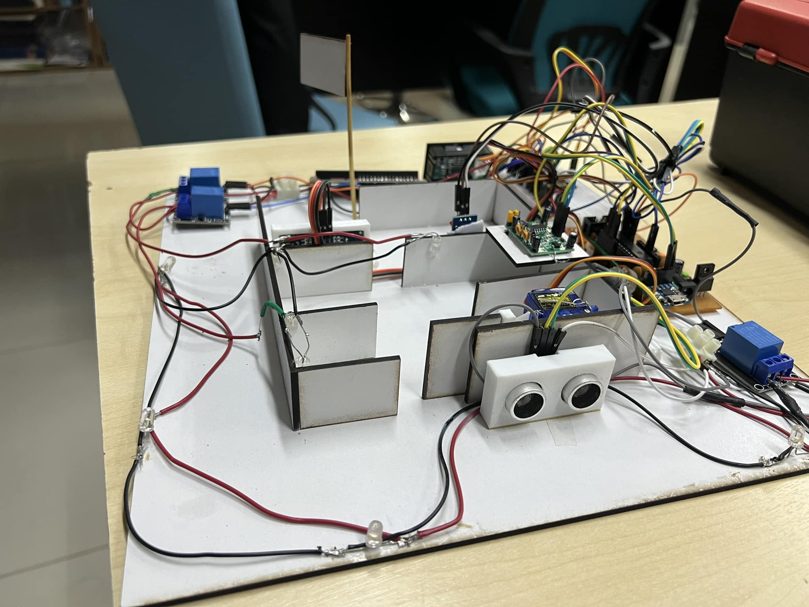
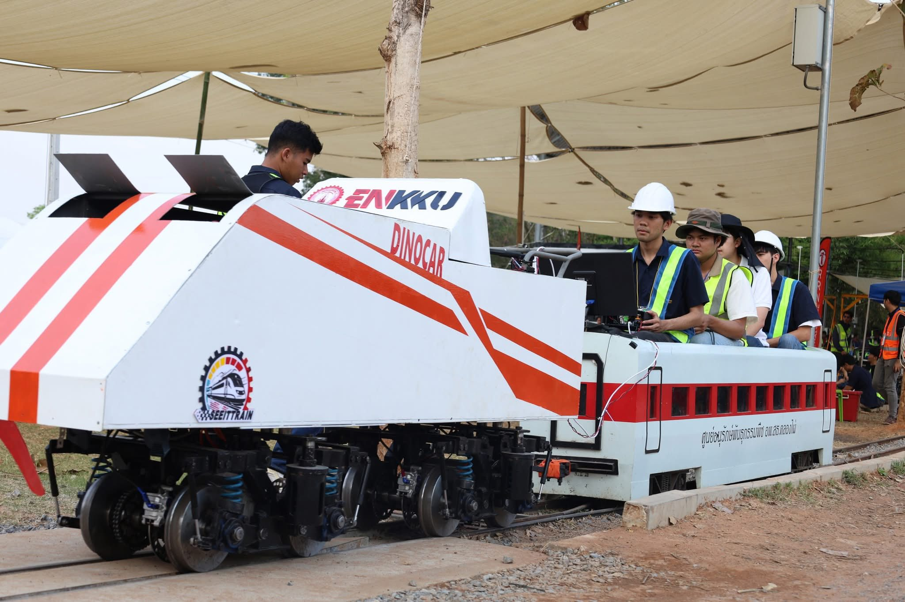
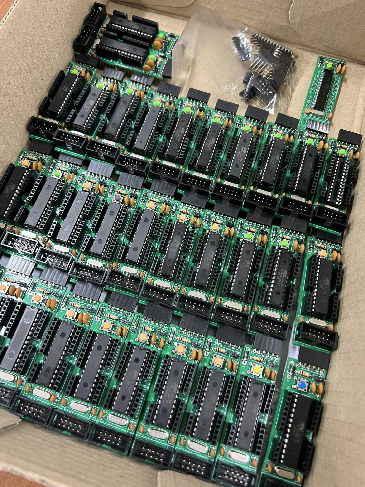

Project IOT

ระบบ IOT โดยมี Node-red เป็น Server และสื่อสารผ่าน MQTT Protocol เข้า ESP32 สื่อสารกับ ATmega 328p ด้วย UART Protocol

ระบบ IOT โดยมี Node-red เป็น Server และสื่อสารผ่าน MQTT Protocol เข้า ESP32 สื่อสารกับ ATmega 328p ด้วย UART Protocol

ออกแบบระบบควบคุมรถราง โดยใช้ Microcontroller ร่วมกับระบบ Project IOT โดยสามารถสั่งการระบบขับเคลื่อนได้ในระยะไกล และมีระบบตรวจสอบสถานะการทำงาน

ออกแบบและสร้าง Microcontroller พร้อมใช้งานในโครงการต่าง ๆ